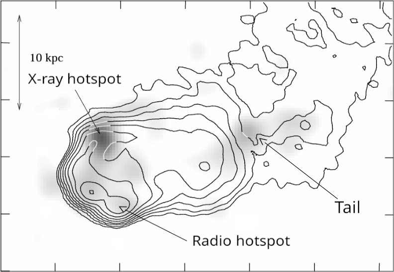
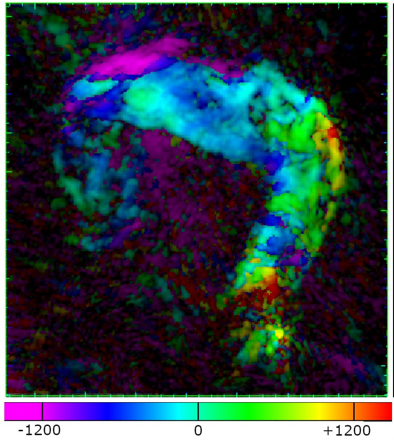
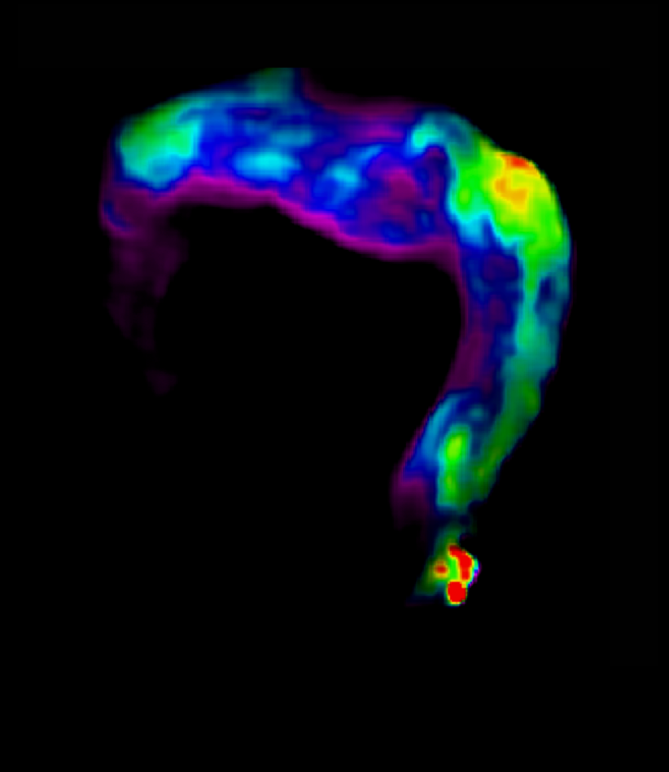

Radio galaxy physics as currently understood is inadequate for meaningful inference on the population, in an era where future instruments plan to observe all objects out to high redshift. This programme addresses three fundamental gaps.
Massive galaxies harbouring supermassive black holes are capable of destructive feedback, quintessential to correct modelling of galaxy growth and to understanding the thermodynamics of their dense, hot gas environments. Recent XRISM data show that turbulence in galaxy clusters is too weak to transport cosmic rays, while the question of how and where energy is transferred from the black hole to Mpc scales remains unclear.
A significant fraction of these AGN emit broad-band synchrotron radiation, to which we are predominantly sensitive in the radio. The widely accepted beam model describes jets terminating at strong shocks where particle acceleration occurs — observationally manifested as hotspots, thought to drive PeV cosmic rays. The rapid deceleration leads to back-flowing plasma (radio lobes), which drive shocks into their surroundings. These processes are identified in just a handful of objects, and so we lack explanations of how they are mediated for the population.
The current picture is that Fermi-I particle acceleration occurs at a single planar non-relativistic shock at the jet termination, where a spectral index of α = −0.5 is expected, with the surrounding lobe represented by a smooth spectral steepening downstream.
Highly resolved observations paint a completely different picture:
Even with broad-band modelling, the slope of the low-frequency power law is steeper (α < −0.5) than Fermi-I predicts. Either our understanding of particle acceleration is severely limited, or we do not have the observations needed to robustly test it.

Our understanding of the fate of radio plasma is called into question by the existence of thin, collimated filaments inside and outside the lobes. Enhanced magnetic fields are required in these regions, and their apparent association with their environments favours external dynamo models for their origin.
Polarimetric observations have mapped the magnetic field distribution across the high-energy regions of lobes, but information on the low-energy regions — which trace plasma longevity on the scales associated with AGN feedback — is missing. Variants of particle re-energisation have been invoked to explain plasma longevity in these structures, but there are limited models and few large samples to test them against. Meanwhile, peculiar X-shaped radio sources suggest periodic re-orientation of jets, but this is not backed up by evidence of frequency-dependent low-surface-brightness features.
Modern variants of the model, calibrated using sensitive surveys, conclude that lobes contain enough power to offset the catastrophic cooling expected in hot gas halos without their presence. A more robust picture of galaxy evolution bridges the current gap between models and observations: what physical mechanisms dictate the eventual transfer of jet energy to its surroundings?


Quantitative measurements of the ratio of radiating to non-radiating particles in the lobes of FR-IIs are still scarce, but this is a crucial parameter in semi-analytic models of radio source evolution — and so the community models FR-II lobes without non-radiating particles. Without a complete definition of the particle composition in the lobes we cannot reliably determine the jet power, as is needed to construct accurate jet-kinetic luminosity functions of large samples.
The mixing of synchrotron plasma with its surroundings is expected in low-power FR-I type sources, but it must also occur in powerful FR-II objects. At most, we know that their lobes must contain different particle compositions, but degeneracies imposed by a lack of deep multi-wavelength data prohibit quantitative measurements of radio galaxy energetics. Sensitive spectral and polarimetric measurements allow a more complete understanding by breaking degeneracies in source physics, as has been accomplished for the jets of FR-Is.
Our primary goal is to unlock a detailed understanding of the energetic processes in the lobes, through well-resolved mapping of radio galaxies between ~150 MHz and 6 GHz — covering acceleration and ageing — at ≲ 1″ resolution. The resulting broad-band view of the true structure in radio galaxies reveals low-surface-brightness features missed by previous observations: compact hotspots, counterjets, and peculiar filamentation. The synthesised total intensity, spectral and polarisation maps will allow us to constrain:
The northern 3CRR sample remains essential: the JVLA offers immediate access, contiguous frequency coverage, and superior resolution in the north, while LOFAR's international baselines — unmatched by SKA-LOW — anchor low-frequency spectra. VLBA/EVN and NOEMA provide critical high-resolution follow-up, and JWST has important follow-up potential for hotspots.
Legacy VLA observations of the 3CRR catalogue have been transformational, leading to more than 400 publications since 1978. In the same way, these observations facilitate complete studies of radio cores, accretion rates, restarting jets, and environments as a function of robustly determined jet power and morphology.